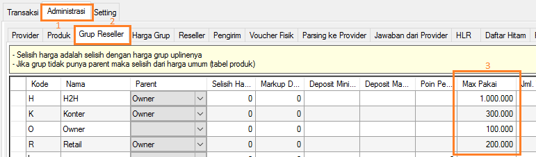

Max Pakai (daily usage)
Seorang Reseller loyal jika diamati total transaksi hariannya akan relatif stabil, misalnya per hari dia mampu habis saldo (menjual) Rp200.000-an, hal tersebut akan terulang dan stabil di angka tersebut setiap hari. Di sisi lain terkadang terjadi tindak kejahatan dimana saldo Reseller dicuri dengan berbagai macam modus yang umumnya saldo akan dikuras (dipakai) transaksi hingga habis dalam sekali waktu. Adakah metode untuk menekan kerugian bila itu terjadi?....
Berangkat dari situ kini OtomaX di versi 3.7.6 mempunyai fitur baru, yaitu Max Pakai. Ia akan membatasi maksimal transaksi harian Reseller, misalnya: dibatasi Rp200.000, maka Reseller hanya dapat transaksi hingga Rp200.000-an dalam sehari, baru dapat bertransaksi lagi keesokan harinya. Harapannya andaisaja terjadi tindak kejahatan (pencurian saldo) akan terhenti di angka Rp200.000-an dan kerugian dapat ditekan sedikit mungkin.
Sebagai catatan, Max Pakai hanya tersedia di edisi Ultimate klik disini; jika edisi OtomaX Anda bukan Ultimate, lakukan upgrade dulu klik disini; jika belum mempunyai OtomaX, beli dahulu klik disini; jika belum versi 3.7.6, lakukan update klik disini; dan jika masa berlaku habis, bayar iuran dahulu klik disini.
Anda dapat menentukan batasan maksimal transaksi harian Reseller di Administrasi -> Grup Reseller -> Max Pakai, perhatikan gambar di bawah ini:

Batasan ini sebaiknya Anda tentukan setelah melakukan analisa mendalam total transaksi harian Reseller agar didapatkan angka batasan ideal, kenyamanan dan keamanan transaksi bagi Reseller Anda.
Kemudian, bila Anda mempunyai pertanyaan tehnis seputar Max Pakai, silahkan kirimkan melalui email ke alamat: support@otomax-software.com atau klik disini.